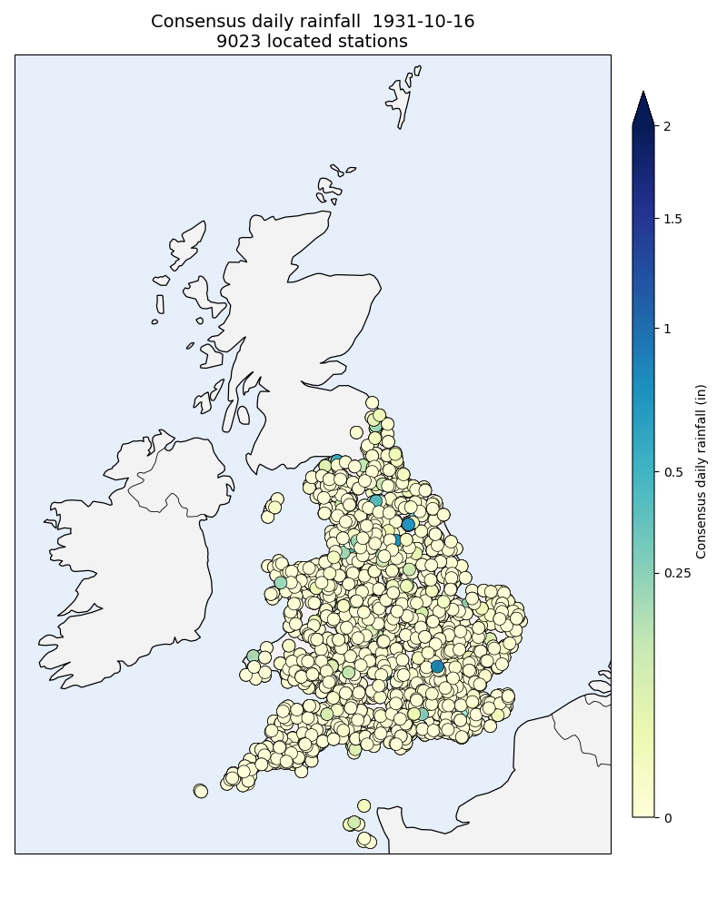

Matching¶
A daily transcription on its own is just a grid of numbers — we don’t know which station or where. This stage fixes that by matching every transcription to a Rainfall Rescue station-year and borrowing its location metadata.
One notebook:
The matching idea¶
Both datasets describe the same physical stations, so their monthly totals should agree. Rainfall Rescue stores the monthly totals directly; for the daily transcriptions we sum the consensus daily values into monthly totals. Matching then compares these month-by-month:
RR vectors — station-year monthly profiles from the monthly data.
Ensemble vectors — monthly values from all five ensemble members.
Primary score — the count of months where the RR value equals any ensemble member value (both rounded to two decimal places).
Tie-breaker — the higher count of overlapping (jointly non-blank) months.
Cosine and adjusted scores are also stored, for diagnostics and comparability with earlier versions.
Full-scale matching on SLURM¶
The notebook runs the matcher interactively on a bounded slice to stay fast. Matching every transcription (~514,000 files) against every RR station-year (~285,000) is a cluster job, split into shards:
Stage |
Script |
SLURM |
Purpose |
|---|---|---|---|
build |
|
1 job |
build the normalised comparison-vector Parquet files (the RAM-heavy step) |
match |
|
array |
match each shard’s slice against all RR candidates |
merge |
|
1 job |
consolidate the shard results into one session |
Launch it from a login node:
scripts/slurm/submit_all.sh
Pass --skip-build to reuse previously built vectors when only the matching
parameters have changed:
scripts/slurm/submit_all.sh --skip-build
Shard count, matching parameters, and the Parquet paths are configured in
scripts/slurm/config.sh.
Assigning the metadata¶
With the matches in hand, each ensemble record is enriched with station metadata. The rule is deliberately conservative — a wrong location poisons everything downstream, so we only assign one when we are confident:
Exact match — a rank-1 match with at least 9 exactly-agreeing months, and no more than 3 monthly values that are exactly zero in the transcription (the zero guard rejects spurious agreement on empty months). All metadata is copied: location name, year, latitude, longitude, and elevation.
Approximate match — the top-3 ranks by score. A year is assigned only if all three agree on it; a position only if all three lie within 1.0° of each other (then the centroid is used). Location name and elevation stay null.
Unmatched — all metadata stays null.
Diagnostics¶
Several scripts under scripts/diagnostics/ let you inspect the result:
plot_image_consensus_metadata.py— a one-page diagnostic for a single transcription: the scanned image, the consensus table, the monthly-total comparison against the matched RR station-year, and a map of the match.plot_daily_rainfall_map.py— every located station’s consensus rainfall for a single date, on a UK map.plot_daily_rainfall_interactive.py— the same map as an interactive Plotly figure; clicking a station copies its specifier to the clipboard.plot_rr_match_counts_interactive.py— a matching-health map showing how many ensemble files exactly match each RR station-year, to spot “attractor” station-years that soak up too many matches.
{kind=link}

Consensus daily rainfall for every located station on a single date (drawn with
the same code as plot_daily_rainfall_map.py). Each point is one matched
station-year — over 9,000 for this day in 1931.¶
Next: Quality control.